Tratamiento Inicial de los datos y Analisis exploratorio#
Librerias#
import pandas as pd
import matplotlib.pyplot as plt
import seaborn as sns
import math
import numpy as np
import pyarrow
from scipy.stats import chi2_contingency
import warnings
warnings.filterwarnings("ignore")
Funciones#
def graficar_multiples_categoricas(df, lista_columnas, cols=2):
n_vars = len(lista_columnas)
rows = math.ceil(n_vars / cols)
fig, axes = plt.subplots(rows, cols, figsize=(cols * 7, rows * 5))
axes = axes.flatten()
for i, col in enumerate(lista_columnas):
order = df[col].value_counts().iloc[:10].index
sns.countplot(
data=df,
y=col,
ax=axes[i],
order=order,
palette="viridis"
)
axes[i].set_title(f'Distribución de {col} (Top 10)', fontsize=14)
axes[i].set_xlabel('Frecuencia')
axes[i].set_ylabel('')
for j in range(i + 1, len(axes)):
fig.delaxes(axes[j])
plt.tight_layout()
plt.show()
def analizar_lote_ctr(df, lista_columnas, max_categorias_grafico=20):
for col in lista_columnas:
print(f"--- Procesando: {col} ---")
df_resumen = df.groupby(col)['click'].agg(['mean', 'count']).reset_index()
df_resumen.columns = [col, 'ctr', 'impresiones']
if df_resumen.shape[0] > max_categorias_grafico:
print(f"Nota: {col} tiene {df_resumen.shape[0]} valores. Graficando solo el Top {max_categorias_grafico} por volumen.")
df_grafico = df_resumen.sort_values(by='impresiones', ascending=False).head(max_categorias_grafico)
else:
df_grafico = df_resumen.sort_values(by='ctr', ascending=False)
plt.figure(figsize=(12, 5))
sns.barplot(data=df_grafico, x=col, y='ctr', palette='magma')
plt.title(f'CTR por {col}')
plt.axhline(df['click'].mean(), color='red', linestyle='--', label='CTR Global')
plt.xticks(rotation=45)
plt.ylabel('CTR (Media de clics)')
plt.show()
def cramers_v(x, y):
ct = pd.crosstab(x, y)
chi2 = chi2_contingency(ct)[0]
n = ct.values.sum()
r, c = ct.shape
return np.sqrt(chi2 / (n * (min(r, c) - 1)))
def cramers_v_matrix(df,categorical_cols,sample_size=1_000_000,random_state=0):
# Muestreo para evitar explosión de memoria
if len(df) > sample_size:
df = df[categorical_cols].sample(
n=sample_size,
random_state=random_state
)
else:
df = df[categorical_cols]
n = len(categorical_cols)
matrix = pd.DataFrame(
np.zeros((n, n)),
index=categorical_cols,
columns=categorical_cols
)
for i in range(n):
for j in range(i, n):
v = cramers_v(df.iloc[:, i], df.iloc[:, j])
matrix.iloc[i, j] = v
matrix.iloc[j, i] = v
return matrix
Carga de datos#
Se realiza la carga inicial de los datos
df = pd.read_csv('train.gz')
print(df.head())
id click hour C1 banner_pos site_id site_domain \
0 1.000009e+18 0 14102100 1005 0 1fbe01fe f3845767
1 1.000017e+19 0 14102100 1005 0 1fbe01fe f3845767
2 1.000037e+19 0 14102100 1005 0 1fbe01fe f3845767
3 1.000064e+19 0 14102100 1005 0 1fbe01fe f3845767
4 1.000068e+19 0 14102100 1005 1 fe8cc448 9166c161
site_category app_id app_domain ... device_type device_conn_type C14 \
0 28905ebd ecad2386 7801e8d9 ... 1 2 15706
1 28905ebd ecad2386 7801e8d9 ... 1 0 15704
2 28905ebd ecad2386 7801e8d9 ... 1 0 15704
3 28905ebd ecad2386 7801e8d9 ... 1 0 15706
4 0569f928 ecad2386 7801e8d9 ... 1 0 18993
C15 C16 C17 C18 C19 C20 C21
0 320 50 1722 0 35 -1 79
1 320 50 1722 0 35 100084 79
2 320 50 1722 0 35 100084 79
3 320 50 1722 0 35 100084 79
4 320 50 2161 0 35 -1 157
[5 rows x 24 columns]
Realizamos la observacion inicial para ver si se necesitan transformar algunas variables
df.info()
<class 'pandas.core.frame.DataFrame'>
RangeIndex: 40428967 entries, 0 to 40428966
Data columns (total 24 columns):
# Column Dtype
--- ------ -----
0 id float64
1 click int64
2 hour int64
3 C1 int64
4 banner_pos int64
5 site_id object
6 site_domain object
7 site_category object
8 app_id object
9 app_domain object
10 app_category object
11 device_id object
12 device_ip object
13 device_model object
14 device_type int64
15 device_conn_type int64
16 C14 int64
17 C15 int64
18 C16 int64
19 C17 int64
20 C18 int64
21 C19 int64
22 C20 int64
23 C21 int64
dtypes: float64(1), int64(14), object(9)
memory usage: 7.2+ GB
Podemos observar que algunas de las variables que en el contexto son categoricas, por lo que debemos transformarlas
df['id']=df['id'].astype("str")
df['dt_hour'] = pd.to_datetime(df['hour'], format='%y%m%d%H')
df['dia_semana'] = df['dt_hour'].dt.day_name()
df['hora_del_dia'] = df['dt_hour'].dt.hour
bins = [0, 6, 12, 18, 24]
labels = ['madrugada', 'mañana', 'tarde', 'noche']
df['franja_horaria'] = pd.cut(
df['dt_hour'].dt.hour,
bins=bins,
labels=labels,
right=False,
include_lowest=True
)
df['franja_horaria'] = df['franja_horaria'].astype('category')
print(df[['hour', 'dt_hour', 'dia_semana', 'hora_del_dia','franja_horaria']].head())
hour dt_hour dia_semana hora_del_dia franja_horaria
0 14102100 2014-10-21 Tuesday 0 madrugada
1 14102100 2014-10-21 Tuesday 0 madrugada
2 14102100 2014-10-21 Tuesday 0 madrugada
3 14102100 2014-10-21 Tuesday 0 madrugada
4 14102100 2014-10-21 Tuesday 0 madrugada
cols_categoricas = ['C1', 'banner_pos', 'device_type', 'device_conn_type'] + [f'C{i}' for i in range(14, 22)]
for col in cols_categoricas:
df[col] = df[col].astype('category')
Con las variables transformadas podemos proseguir con el exploratorio
Analisis exploratorio#
Se analiza primero la distribucion de la variable objetivo
plt.figure(figsize=(6,4))
sns.countplot(x='click', data=df)
plt.title('Distribución de Clics (0 = No, 1 = Sí)')
plt.show()
ctr_global = df['click'].mean()
print(f"La Tasa de Clic (CTR) global es: {ctr_global:.2%}")
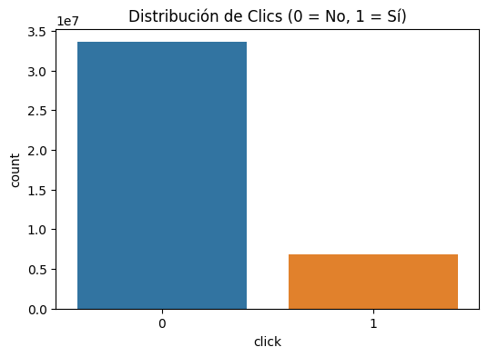
La Tasa de Clic (CTR) global es: 16.98%
Se puede observar que la variable objetivo tiene un desbalance bastante notorio en el No, por lo que se tendra que aplicar el balanceo a la hora de realizar el modelo
Se analizan si hay datos faltantes
porcentaje_faltantes = (df.isnull().sum() / len(df)) * 100
print(porcentaje_faltantes)
id 0.0
click 0.0
hour 0.0
C1 0.0
banner_pos 0.0
site_id 0.0
site_domain 0.0
site_category 0.0
app_id 0.0
app_domain 0.0
app_category 0.0
device_id 0.0
device_ip 0.0
device_model 0.0
device_type 0.0
device_conn_type 0.0
C14 0.0
C15 0.0
C16 0.0
C17 0.0
C18 0.0
C19 0.0
C20 0.0
C21 0.0
dt_hour 0.0
dia_semana 0.0
hora_del_dia 0.0
franja_horaria 0.0
dtype: float64
Podemos observar que no hay datos faltantes, revisamos tambien nuevamente los tipos de datos
df.info()
<class 'pandas.core.frame.DataFrame'>
RangeIndex: 40428967 entries, 0 to 40428966
Data columns (total 28 columns):
# Column Dtype
--- ------ -----
0 id object
1 click int64
2 hour int64
3 C1 category
4 banner_pos category
5 site_id object
6 site_domain object
7 site_category object
8 app_id object
9 app_domain object
10 app_category object
11 device_id object
12 device_ip object
13 device_model object
14 device_type category
15 device_conn_type category
16 C14 category
17 C15 category
18 C16 category
19 C17 category
20 C18 category
21 C19 category
22 C20 category
23 C21 category
24 dt_hour datetime64[ns]
25 dia_semana object
26 hora_del_dia int32
27 franja_horaria category
dtypes: category(13), datetime64[ns](1), int32(1), int64(2), object(11)
memory usage: 5.0+ GB
Revisamos la cardinalidad de la mayoria de variables
cat_cols = df.select_dtypes(include=["object", "category"]).columns
cardinalidades = df[cat_cols].nunique().sort_values(ascending=False)
cardinalidades.head(10)
id 40428967
device_ip 6729486
device_id 2686408
app_id 8552
device_model 8251
site_domain 7745
site_id 4737
C14 2626
app_domain 559
C17 435
dtype: int64
Podemos observar el numero de categorias de cada variable, con algunas que son demasiado numerosas, por lo que se deben tomar con precaucion a la hora de realizar el modelo
Realizamos analisis univariado para variables categoricas, con graficas para algunas de las variables con menos categorias para que los graficos puedan ser analizados
cat=['device_type','device_conn_type','banner_pos']
graficar_multiples_categoricas(df,cat)
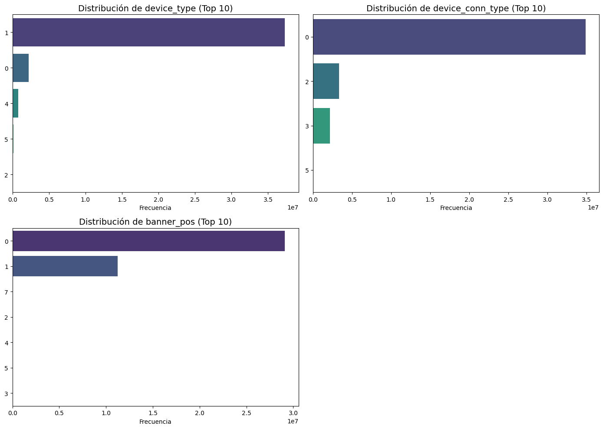
Observamos que hay algunas clases de las variables en la que algunas clases dominan en comparacion de otras clases
Realizamos tambien una comparacion entre los clicks y algunas de las variables con menos categorias, las variables con demasiadas categorias se limitaron a solo las 20 mas importantes.
cols=['banner_pos', 'device_type', 'device_conn_type','franja_horaria','site_category','C1','C15','C16','C18','C21']
analizar_lote_ctr(df,cols)
--- Procesando: banner_pos ---
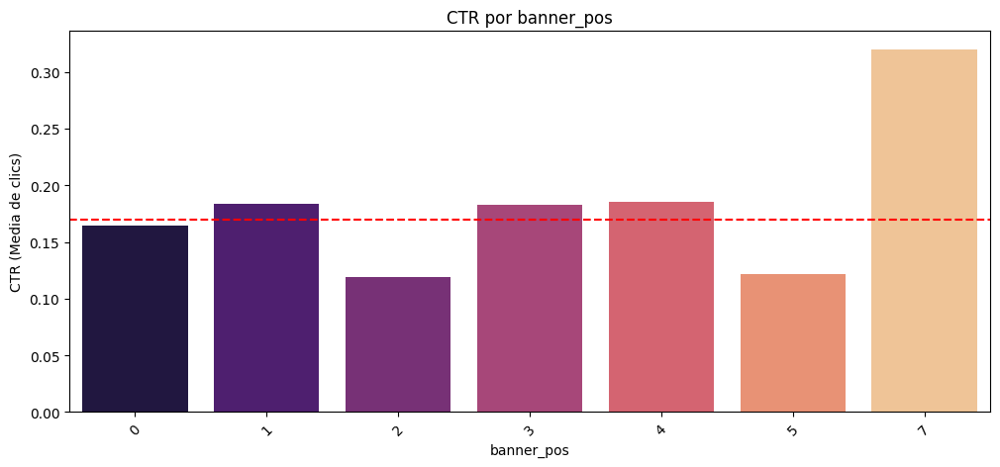
--- Procesando: device_type ---
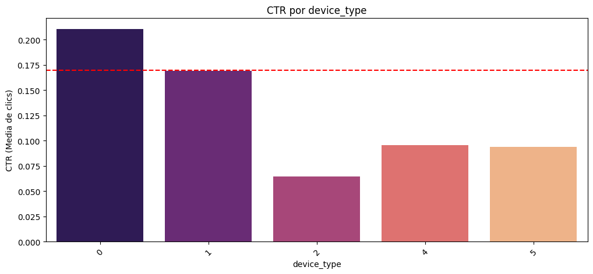
--- Procesando: device_conn_type ---
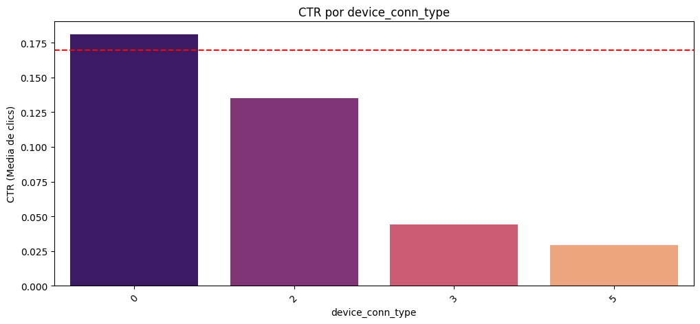
--- Procesando: franja_horaria ---
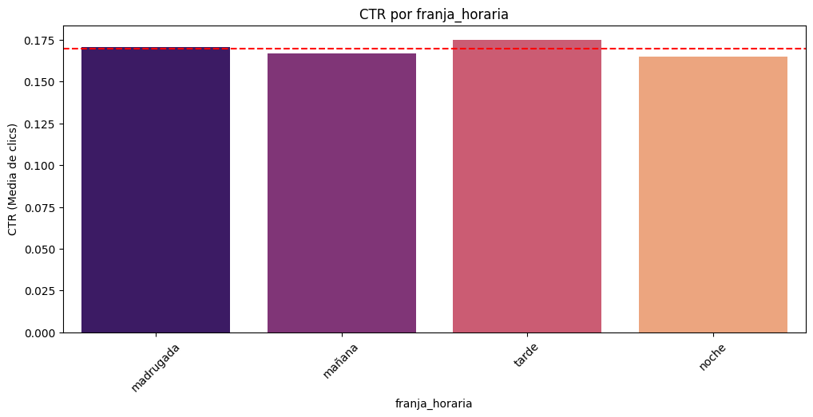
--- Procesando: site_category ---
Nota: site_category tiene 26 valores. Graficando solo el Top 20 por volumen.
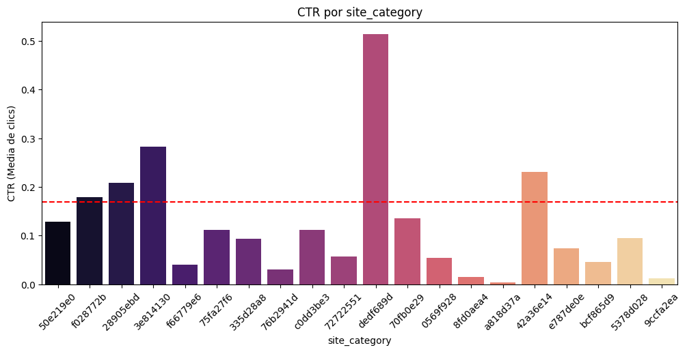
--- Procesando: C1 ---
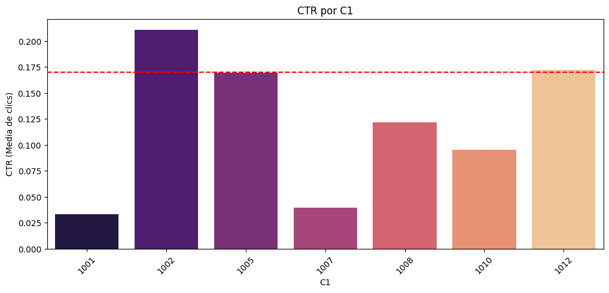
--- Procesando: C15 ---
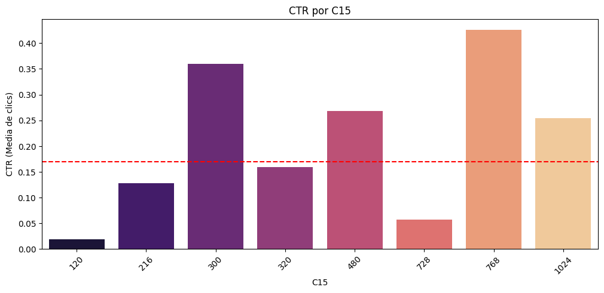
--- Procesando: C16 ---
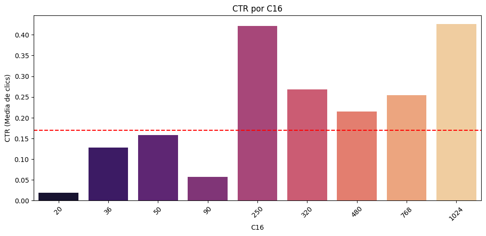
--- Procesando: C18 ---
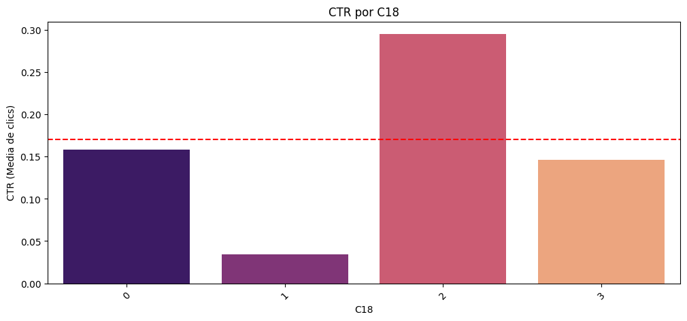
--- Procesando: C21 ---
Nota: C21 tiene 60 valores. Graficando solo el Top 20 por volumen.
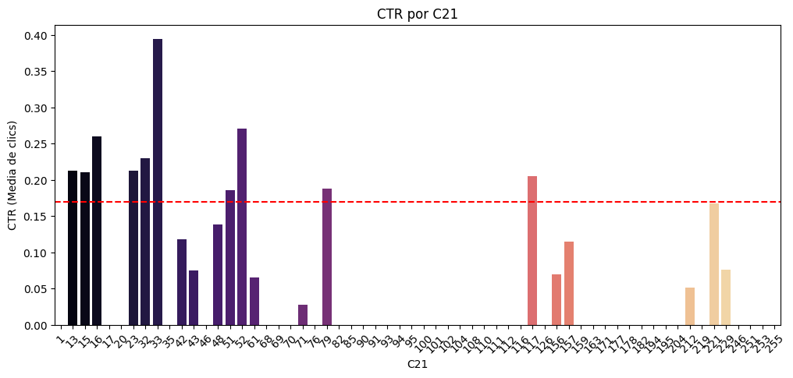
Gracias a este grafico podemos observar cuales categorias son las que hay que tener mas en cuenta a la hora de hacer el modelo, porque sabemos cuales estan por encima del pormedio de las personas que dijeron que si, ademas que vemos que C15 y C16 son realmente dimensiones que no son categorias por lo que se tomaran en cuenta a la hora del modelado
Realizamos un lineplot para determinar de manera mas detallada como se distribuye CTR por hora
ctr_per_hour = df.groupby('hora_del_dia')['click'].mean().reset_index()
plt.figure(figsize=(12, 6))
sns.lineplot(data=ctr_per_hour, x='hora_del_dia', y='click', marker='o', color='#2ecc71')
plt.title('Click-Through Rate (CTR) por Hora del Día', fontsize=15)
plt.xlabel('Hora del Día (0-23)', fontsize=12)
plt.ylabel('CTR Promedio', fontsize=12)
plt.grid(True, linestyle='--', alpha=0.7)
plt.xticks(range(0, 24))
plt.show()
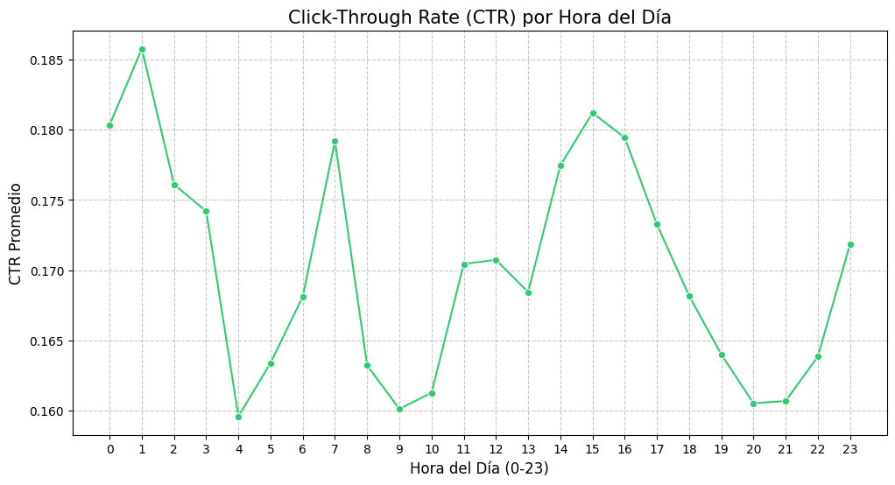
Al realizar este grafico podemos confirmar que la hora es una de las variables mas importantes para el modelo de este dataset porque a partir de ella podemos observar los picos en donde se realizan mas clicks siendo estos la 1 AM,7 AM y las 3PM con menor atencion en la noche o al final de la madrugada no hay tanta actividad,lo cual coincide con CTR de la franja horaria, lo que hace a las variables temporales variables claves para el modelado de la red neuronal.
Realizamos una matriz de correlaciones con V de cramer para de esta manera determinar si hay variables muy correlacionadas entre si y determinar si alguna se puede eliminar
cat_vars = [
"C1",
"banner_pos",
"device_type",
"device_conn_type","site_domain","site_category","app_domain","app_category",
"C14", "C15", "C16", "C17", "C18",
"C19", "C20", "C21"
]
cramers_matrix = cramers_v_matrix(
df,
categorical_cols=cat_vars,
sample_size=1_000_000
)
plt.figure(figsize=(14, 12))
sns.heatmap(
cramers_matrix,
annot=True,
fmt=".2f",
annot_kws={"size": 8},
cmap="viridis"
)
plt.title("Matriz de asociación categórica (Cramér's V)")
plt.tight_layout()
plt.show()
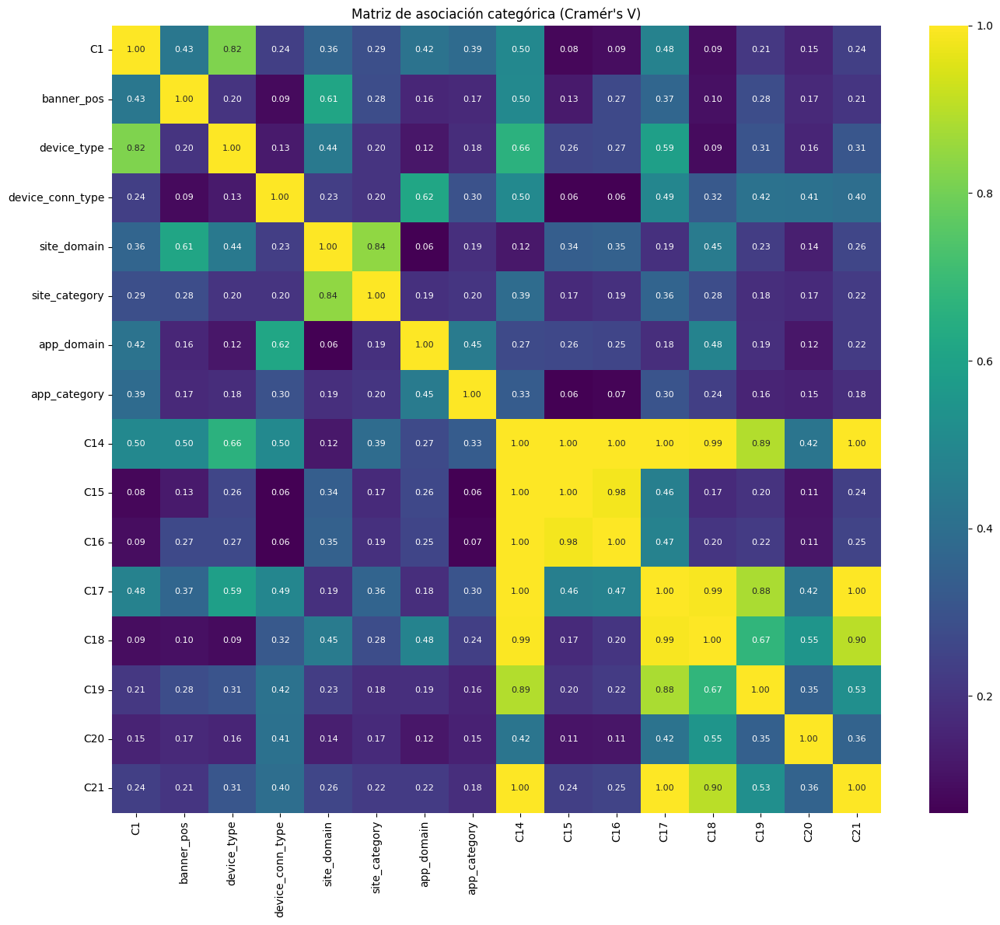
Podemos observar que hay variables correlacionadas de manera fuerte entre si, sobre todo las variables categoricas anonimas, por lo que de ellas solo se conservara C14 para el proyecto. se mantendra site domain en vez de site category debido a ser variables correlacionadas
Exportamos el dataframe en modo parquet para ser usado en las otras partes del jbook
#df.to_parquet('datos_procesados.parquet', engine='pyarrow', compression='snappy')